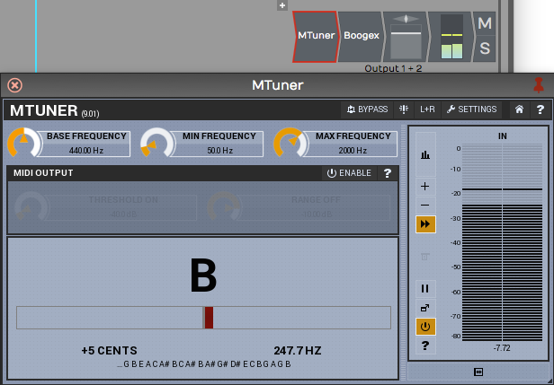

Using an Amp Simulator Plugin¶
This chapter shows how to record direct electric guitar through an amp simulator plugin. Waveform doesn't include a full amp simulator, but you can build a basic chain from the built-in Distortion plugin followed by Guitar IR for the cabinet (Guitar IR needs Waveform Pro or the Recording Engineer Expansion; see Built-in Effects Plugins). Most third-party amp simulator plugins work too. If you don't have one, Voxengo's free Boogex plugin is used as the example in this chapter. You can download it from Voxengo.com.

Free Boogex Amp Simulator from Voxengo
Setting Up the Track¶
- Connect your guitar to the high impedance input on your audio interface as described in Audio Device Setup. If your interface doesn't have a guitar input, use a suitable preamp.

Connect Your Guitar to your Interface
- Create a new track, select the input, and arm it for recording.

Select the Input and Arm It
- Turn direct monitoring on your audio interface all the way down, or disable it. You need to hear all of your guitar signal through Waveform.

Turn off Any Input Monitoring on Your Interface
- Right-click the input and choose Live Input Monitoring > On (or select the input and set Input Monitoring Mode to On in the Actions panel). You should now hear your dry, unprocessed guitar signal.

Turn on Live Input Monitoring
- Open the Search tab of the Browser and type the first few characters of your amp simulator plugin's name. Drag the plugin to the track in the inline mixer.

Drag the Amp Sim Plugin to the Mixer
- If the plugin's window didn't open, click it (or double-click it, if you changed Open plugin windows by in Settings > General). With Live Input Monitoring on, you should hear the plugin when you play. Select a preset and it should sound like you're playing through whatever rig your plugin simulates.
💡 Tip: To bypass the plugin, click it to select it and press F, which enables or disables any selected plugins. You can also use the Enabled row in the Actions panel.

Amp Sim Plugin Shown Disabled
Recording with the Amp Sim¶
At this point, recording works the same as in Recording Audio.
- Record-enable the track and put the cursor at the beginning.
- Click Record in the transport bar. To loop record, turn on Loop first, so you can record several takes in quick succession.
- Tweak the sound as much as you like after you've recorded the part.

Recording with the Amp Sim
Recording this way lets you change the sound after the fact, and use guitar rigs you don't own, without disturbing the neighbours.
It also helps when you edit your guitar tracks. Edits made to the dry signal, before the amp and distortion, sound more natural and are much less noticeable than edits to a fully processed guitar part.
Guitar & Impedance¶
Guitars connect to your audio interface through a quarter-inch, unbalanced, high impedance connection. You don't need to understand what that means electrically, but you get a better tone and feel from a proper high impedance input. A standard input loads guitar pickups down, and you lose articulation and punch.
On most audio interfaces, the first one or two channels have guitar inputs, often with a switch or button that enables high impedance mode for a guitar or bass. Your guitar might work through a normal low impedance input, but the high impedance input, with that mode engaged, gives you better picking dynamics and tone.
Managing Latency¶
Latency matters when you play through an amp simulator. If the Audio buffer size is too high, there's a long delay between playing a note and hearing it. If it's too low, you might get pops and clicks when the computer doesn't have enough CPU power for that latency. The aim is a setting that feels responsive but still sounds clean.
To set the Audio buffer size, which determines the latency:
- Open Settings > Audio Devices.
- Locate the Audio buffer size setting. The value shows a number of samples followed by a calculated latency delay.
- Enter an Audio buffer size value. Values around 256 or lower tend to work well, depending on what else is going on in the Edit.

The Audio buffer size setting on the Audio Devices page
Speed of Sound Through Air¶
In this example, a buffer size of 256 samples gives 5.8 ms of latency: when you play a note on your guitar, you hear it about 5.8 ms later.
Sound travels through air at about 1 ms per foot (1 ms per 0.3 metres), so a 5.8 ms delay is like playing your guitar amp from 5.8 feet (1.8 metres) away. Add the distance to your monitor speakers as well: if they're two or three feet away, it's like having your amplifier nine feet away. Most guitar players can cope with that, as it's about how far you'd stand from your amp on stage. Much more than that and you hear a noticeable lag, which affects the feel and impact of your playing.
At a buffer size of 1024 samples, the delay is 23 ms. That feels like playing with your amplifier 23 feet (7 metres) from your ears, which is hard to work with.
Setting the buffer size as low as it will go can cause problems of its own. With a lot of other plugins and virtual instruments running, a very low buffer can make playback stop or break up.
📝 Note: Set the buffer size as low as you can to reduce latency, while keeping it high enough for clean, solid playback. When you're mixing rather than recording, a larger buffer such as 1024 is fine.
Dialling in the Guitar Tone¶
Use the controls on the amp simulator to dial in your guitar tone. Flip through the presets, or start with one and tweak the controls until you like the sound. Recording this way means you don't have to commit to the sound yet, so dial in something inspiring enough to get a good performance, and come back to the amp settings later.
💡 Tip: If your amp sim has no cabinet of its own (or you've switched it off), put Guitar IR PRO after it on the track and load a cabinet impulse response there. Dual Guitar IR PRO blends two responses, such as two mic positions. Both need Waveform Pro or the Recording Engineer Expansion; see Guitar IR.
Using a Tuner Plugin¶
When you record a guitar or bass direct, it helps to add a tuner plugin before the amp sim. Waveform doesn't include a tuner, but you can drop any tuner plugin onto the track in the inline mixer.
💡 Tip: If you don't have a tuner plugin, you can download one as part of the MFreeFXBundle from Melda Production.

Tuning with the MTuner Plugin
To set up a tuner plugin:
- Open the Search tab of the Browser. Select Plugins in the search options dropdown, then type the first few characters of your tuner plugin's name. The plugin appears in the search list.
- Drag the tuner into the plugins area of the track. Its window usually opens as soon as you drop it. If it doesn't, click the plugin to open it.
- Play a note on your guitar. If the tuner doesn't respond, arm the track for recording and set Live Input Monitoring to On. Both are needed for the signal to flow through the track to the inline mixer and the tuner plugin.
When you've finished tuning, close the tuner's window. The plugin stays on the track, so you can click it to open the window again.
Moving On¶
You can also mic up your guitar amplifier and record it as described in Recording Audio. If you split your guitar signal and record the direct signal alongside the miked amp, you can blend the amp sim with the real amp when mixing.